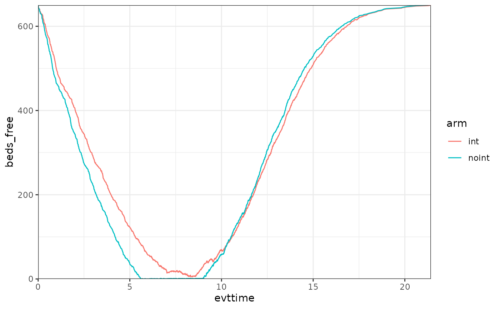
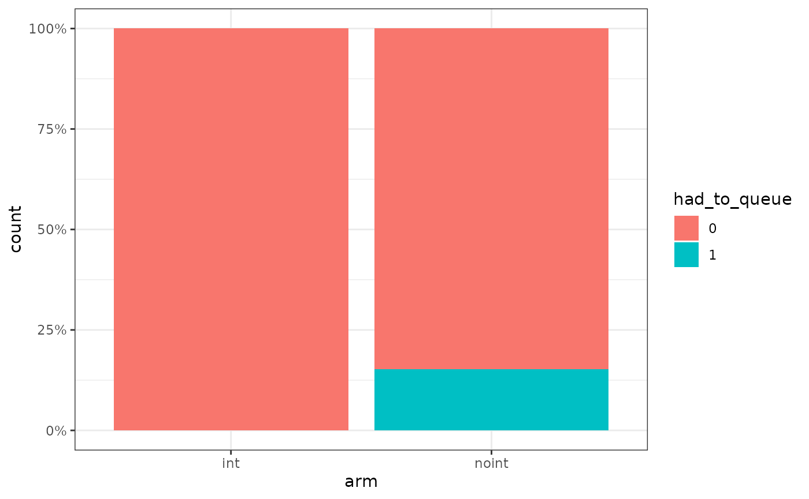
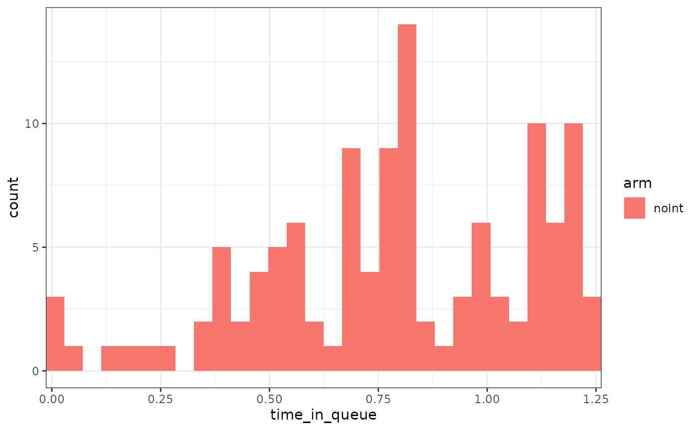
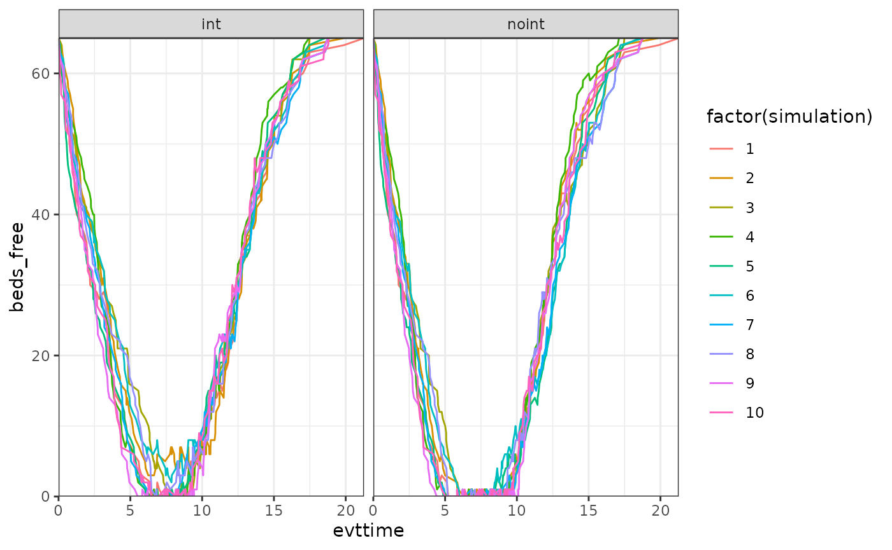

Example for a Resource Constrained Sick-Sicker-Dead model
Javier Sanchez Alvarez
October 08, 2025
Source:vignettes/articles/example_ssd_constrained.Rmd
example_ssd_constrained.RmdIntroduction
This document runs a discrete event simulation model in the context of a late oncology model to show how the functions can be used to generate a model in only a few steps. In this particular case, we document how to run a model with constrained resources.
Main options
library(WARDEN)
library(dplyr)
#>
#> Attaching package: 'dplyr'
#> The following objects are masked from 'package:stats':
#>
#> filter, lag
#> The following objects are masked from 'package:base':
#>
#> intersect, setdiff, setequal, union
library(ggplot2)
library(kableExtra)
#>
#> Attaching package: 'kableExtra'
#> The following object is masked from 'package:dplyr':
#>
#> group_rows
library(purrr)General inputs with delayed execution
Compared to the standard sick-sicker-death model vignette, here nothing changes, except that now we add a resource which will be constrained (in a discrete manner, i.e., it accepts an integer amount of units and the resource can only be used unit-wise, like hospital beds, or doctors).
We should be careful about where we put the constrained resource, as
the level at which we set it up will determine its availability to
patients. Normally the intention is to have the resource being shared
within an arm by patients (and cloned across arms to make sure we
compare apples to apples), which means the resource should be allocated
in common_all_inputs (as those inputs will be cloned per
arm, so they will not be shared across arms unless explicitly declared
so using the specific constrained objects like
resource_discrete() or shared_input()). In our
case, we call the resource beds, and we use
resource_discrete() to set 650 beds to be shared. We also
keep track of the number of beds free for the purpose of seeing it in
the results.
For the sake of an example, we also create a shared input that we
will be updating as a counter of patients as they go through the
simulation, to showcase how inputs can be shared. Objects that are not
defined in resource_discrete() or
shared_inputs() will not be shared, and hard copies will be
made (unless the user introduces objects which are environments, in
which case by their own nature they will be modified by reference, so
they will be shared across analyses, simulations, arms, and patients, so
their use is not really recommended except for advanced R users).
Because of the way the constrained simulation works, it is very
important to pre-define any random numbers that will be used before the
simulation executes (normally at the unique_pt_inputs
level, though depends on the case, see below for an exception and the
early breast cancer model for the norm), and not to call the “r”
functions (rexp(), rpois()…) in the event
reactions. This is because the random state of the model will change as
it goes over the model, and the nature of the loop makes it so that the
random states can be mixed between patients between one simulation and
another if an event TTE is altered so its position in the queue changes
from one simulation to another. This is also very important if we want
to compare outcomes using constrained = FALSE and constrained = TRUE (as
in constrained = FALSE the random state is patient specific and can be
tracked, but in constrained is much harder to do so or would violate
CRAN norms).
#We don't need to use sensitivity_inputs here, so we don't add that object
#Put objects here that do not change on any patient or intervention loop
#We use add_item and add_item to showcase how the user can implement the inputs (either works, add_item is just faster)
common_all_inputs <-add_item(input = {
util.sick <- 0.8
util.sicker <- 0.5
cost.sick <- 3000
cost.sicker <- 7000
cost.int <- 1000
coef_noint <- log(0.2)
HR_int <- 0.8
drc <- 0.035 #different values than what's assumed by default
drq <- 0.035
random_seed_sicker_i <- sample.int(100000,npats,replace = FALSE)
beds <- resource_discrete(650) #initialized with 650 beds
beds_free <- beds$n_free() #extract current n_free
shared_accumulator <- shared_input(0) #initialized at 0
value_accum <- shared_accumulator$value() #extract value
})
#Put objects here that do not change as we loop through treatments for a patient
common_pt_inputs <- add_item(death= max(0.0000001,rnorm(n=1, mean=12, sd=3)))
#Put objects here that change as we loop through treatments for each patient (e.g. events can affect fl.tx, but events do not affect nat.os.s)
unique_pt_inputs <- add_item(fl.sick = 1,
q_default = util.sick,
c_default = cost.sick + if(arm=="int"){cost.int}else{0},
success_blocking_bed = FALSE,
had_to_queue = 0,
time_in_queue = NA,
time_start_queue = NA) Events
Add Initial Events
Nothing changes here relative to the standard approach.
init_event_list <-
add_tte(arm=c("noint","int"), evts = c("sick","sicker","death") ,input={
sick <- 0
sicker <- draw_tte(1,dist="exp", coef1=coef_noint, beta_tx = ifelse(arm=="int",HR_int,1), seed = random_seed_sicker_i[i]) #this way the value would be the same if it wasn't for the HR, effectively "cloning" patients luck
})Add Reaction to Those Events
We will assume that when the patients enter the sicker event, they attempt to use one of the beds. If they do so, everything goes as normal. If they fail to use one of the beds, the time to death is accelerated as they cannot get the right treatment.
The discrete resources work similarly to R6 objects, i.e., we call
functions from themselves (in this case,
beds$attempt_block() as opposed to what would be a
traditional approach attempt_block(beds)), and they
automatically modify the beds object without needing to
return anything. An advantage of using R6-like objects is that we can
also make them return something to the user (as well as keep modifying
themselves!). In this case, attempt_block will return
TRUE or FALSE depending on the success or
failure of using the resource.
If the patient fails to block the bed, then the time to death is accelerated by a factor of 0.8. Note that because resources are shared, we can 1) know who the next patient in the queue is, and 2) create a new event for that specific patient, even if the current patient being evaluated is another.
Once a patient reaches the sicker state (or dies), the resource is
freed (if being used)/ the patient is removed from the queue (using
attempt_free()) and we set the event time for the next
patient in the queue to use.
We are also tracking a few things just to keep track of them, like free beds count, time in a queue for patients who queued, and also whether the patient had to queue or not.
evt_react_list <-
add_reactevt(name_evt = "sick",
input = {
shared_accumulator <- shared_accumulator$modify(shared_accumulator$value() + 1)
value_accum <- shared_accumulator$value()
beds_free <- beds$n_free()
time_in_queue <- NA
}) %>%
add_reactevt(name_evt = "sicker",
input = {
success_blocking_bed <- beds$attempt_block()
beds_free <- beds$n_free()
if(!success_blocking_bed){
time_start_queue <- curtime
modify_event(c(death = max(curtime,get_event("death") * 0.8)))
had_to_queue <- 1
}else{
time_in_queue <- ifelse(had_to_queue == 1, curtime - time_start_queue,NA)
}
q_default <- util.sicker
c_default <- cost.sicker + if(arm=="int"){cost.int}else{0}
fl.sick <- 0
}) %>%
add_reactevt(name_evt = "death",
input = {
beds$attempt_free() #remove from using or from the queue
if(success_blocking_bed & beds$queue_size() > 0){
new_event(c(sicker = curtime),
cur_evtlist,
patient_id = beds$next_patient_in_line())
}
success_blocking_bed <- FALSE
time_in_queue <- NA
beds_free <- beds$n_free()
q_default <- 0
c_default <- 0
curtime <- Inf
}) Model
Model Execution
The model is executed in exactly the same way as before, but we just
need to add constrained = TRUE to the arguments of
run_sim.
#Logic is: per patient, per intervention, per event, react to that event.
results <- run_sim(
npats=1000, # number of patients to be simulated
n_sim=1, # number of simulations to run
psa_bool = FALSE, # use PSA or not. If n_sim > 1 and psa_bool = FALSE, then difference in outcomes is due to sampling (number of pats simulated)
arm_list = c("int", "noint"), # intervention list
common_all_inputs = common_all_inputs, # inputs common that do not change within a simulation
common_pt_inputs = common_pt_inputs, # inputs that change within a simulation but are not affected by the intervention
unique_pt_inputs = unique_pt_inputs,
init_event_list = init_event_list, # initial event list
evt_react_list = evt_react_list, # reaction of events
util_ongoing_list = util_ongoing,
cost_ongoing_list = cost_ongoing,
constrained = TRUE,
ipd = 1,
input_out = c("beds_free","had_to_queue","time_in_queue","value_accum")
)
#> Analysis number: 1
#> Simulation number: 1
#> Time to run simulation 1: 1.21s
#> Time to run analysis 1: 1.21s
#> Total time to run: 1.21s
#> Simulation finalized;Post-processing of Model Outputs
Summary of Results
summary_results_det(results[[1]][[1]]) #print first simulation
#> int noint
#> costs 58978.88 50094.68
#> dcosts 0.00 8884.20
#> lys 9.72 9.48
#> dlys 0.00 0.24
#> qalys 6.27 5.96
#> dqalys 0.00 0.31
#> ICER NA 37160.24
#> ICUR NA 28856.67
#> INMB NA 6509.47
#> costs_undisc 74324.03 62968.98
#> dcosts_undisc 0.00 11355.04
#> lys_undisc 11.99 11.63
#> dlys_undisc 0.00 0.36
#> qalys_undisc 7.62 7.20
#> dqalys_undisc 0.00 0.41
#> ICER_undisc NA 31720.16
#> ICUR_undisc NA 27387.61
#> INMB_undisc NA 9375.22
#> beds_free 261.50 241.64
#> dbeds_free 0.00 19.87
#> c_default 58978.88 50094.68
#> dc_default 0.00 8884.20
#> c_default_undisc 74324.03 62968.98
#> dc_default_undisc 0.00 11355.04
#> had_to_queue 0.00 0.15
#> dhad_to_queue 0.00 -0.15
#> q_default 6.27 5.96
#> dq_default 0.00 0.31
#> q_default_undisc 7.62 7.20
#> dq_default_undisc 0.00 0.41
#> time_in_queue NaN NaN
#> dtime_in_queue NaN NaN
#> value_accum 500.50 500.50
#> dvalue_accum 0.00 0.00
psa_ipd <- bind_rows(map(results[[1]], "merged_df"))
psa_ipd[1:10,] %>%
kable() %>%
kable_styling(bootstrap_options = c("striped", "hover", "condensed", "responsive"))| evtname | evttime | prevtime | pat_id | arm | total_lys | total_qalys | total_costs | total_costs_undisc | total_qalys_undisc | total_lys_undisc | lys | qalys | costs | lys_undisc | qalys_undisc | costs_undisc | beds_free | had_to_queue | time_in_queue | value_accum | c_default | q_default | c_default_undisc | q_default_undisc | nexttime | simulation | sensitivity |
|---|---|---|---|---|---|---|---|---|---|---|---|---|---|---|---|---|---|---|---|---|---|---|---|---|---|---|---|
| sick | 0.000 | 0.000 | 1 | int | 10.34 | 8.27 | 41358 | 51112 | 10.22 | 12.78 | 10.339 | 8.272 | 41358 | 12.778 | 10.222 | 51112 | 650 | 0 | NA | 1 | 41358 | 8.272 | 51112 | 10.222 | 12.778 | 1 | 1 |
| death | 12.778 | 0.000 | 1 | int | 10.34 | 8.27 | 41358 | 51112 | 10.22 | 12.78 | 0.000 | 0.000 | 0 | 0.000 | 0.000 | 0 | 313 | 0 | NA | 1 | 0 | 0.000 | 0 | 0.000 | 12.778 | 1 | 1 |
| sick | 0.000 | 0.000 | 2 | int | 7.75 | 4.14 | 58485 | 68551 | 4.78 | 9.02 | 0.887 | 0.710 | 3549 | 0.901 | 0.721 | 3604 | 650 | 0 | NA | 2 | 3549 | 0.710 | 3604 | 0.721 | 0.901 | 1 | 1 |
| sicker | 0.901 | 0.000 | 2 | int | 7.75 | 4.14 | 58485 | 68551 | 4.78 | 9.02 | 6.867 | 3.434 | 54937 | 8.118 | 4.059 | 64947 | 521 | 0 | NA | 2 | 54937 | 3.434 | 64947 | 4.059 | 9.019 | 1 | 1 |
| death | 9.019 | 0.901 | 2 | int | 7.75 | 4.14 | 58485 | 68551 | 4.78 | 9.02 | 0.000 | 0.000 | 0 | 0.000 | 0.000 | 0 | 32 | 0 | NA | 2 | 0 | 0.000 | 0 | 0.000 | 9.019 | 1 | 1 |
| sick | 0.000 | 0.000 | 3 | int | 10.94 | 5.57 | 86287 | 108582 | 6.96 | 13.73 | 0.317 | 0.253 | 1266 | 0.318 | 0.255 | 1273 | 650 | 0 | NA | 3 | 1266 | 0.253 | 1273 | 0.255 | 0.318 | 1 | 1 |
| sicker | 0.318 | 0.000 | 3 | int | 10.94 | 5.57 | 86287 | 108582 | 6.96 | 13.73 | 10.628 | 5.314 | 85020 | 13.414 | 6.707 | 107309 | 609 | 0 | NA | 3 | 85020 | 5.314 | 107309 | 6.707 | 13.732 | 1 | 1 |
| death | 13.732 | 0.318 | 3 | int | 10.94 | 5.57 | 86287 | 108582 | 6.96 | 13.73 | 0.000 | 0.000 | 0 | 0.000 | 0.000 | 0 | 405 | 0 | NA | 3 | 0 | 0.000 | 0 | 0.000 | 13.732 | 1 | 1 |
| sick | 0.000 | 0.000 | 4 | int | 8.61 | 5.24 | 56449 | 68546 | 6.10 | 10.22 | 3.116 | 2.493 | 12463 | 3.296 | 2.637 | 13183 | 650 | 0 | NA | 4 | 12463 | 2.493 | 13183 | 2.637 | 3.296 | 1 | 1 |
| sicker | 3.296 | 0.000 | 4 | int | 8.61 | 5.24 | 56449 | 68546 | 6.10 | 10.22 | 5.498 | 2.749 | 43986 | 6.920 | 3.460 | 55363 | 266 | 0 | NA | 4 | 43986 | 2.749 | 55363 | 3.460 | 10.216 | 1 | 1 |
We can also check the evolution of the free beds over time per arm.
As it can be seen, 650 beds is just enough for the int arm
to handle all the requests, however in the noint arm there
are a few patients which must queue for some time. Note that the same
thing we do to see the number of free beds could be used to understand
the % of patients that were able to use a bed, etc. WARDEN is flexible
in that sense, one just needs to keep track of those numbers. For
example, below we can see that around 15% of the noint
patients had to queue at a certain point. We can also track things like
queuing time, etc. In this case, for these 15% of patients, the average
queuing time was around 9 months.

#> Warning: Removed 1883 rows containing non-finite outside the scale range
#> (`stat_bin()`).
Sensitivity Analysis
Run model with constrained = FALSE
It can be seen that with constrained = FALSE, the
results are equivalent to the SSD standard vignette. Furthermore, if the
model is run with constrained = TRUE but in such a way that the
constraint does not bind (e.g., with 1000+ beds) then the results are
also equivalent. If the model is run with
constrained = FALSE, then shared inputs and resources are
no longer shared. This allows to very quickly evaluate how the model
outputs change when resources are constrained vs. when they are not.
#Logic is: per patient, per intervention, per event, react to that event.
results <- run_sim(
npats=1000, # number of patients to be simulated
n_sim=1, # number of simulations to run
psa_bool = FALSE, # use PSA or not. If n_sim > 1 and psa_bool = FALSE, then difference in outcomes is due to sampling (number of pats simulated)
arm_list = c("int", "noint"), # intervention list
common_all_inputs = common_all_inputs, # inputs common that do not change within a simulation
common_pt_inputs = common_pt_inputs, # inputs that change within a simulation but are not affected by the intervention
unique_pt_inputs = unique_pt_inputs,
init_event_list = init_event_list, # initial event list
evt_react_list = evt_react_list, # reaction of events
util_ongoing_list = util_ongoing,
cost_ongoing_list = cost_ongoing,
constrained = FALSE,
ipd = 1,
input_out = c("beds_free","had_to_queue","time_in_queue")
)
#> Analysis number: 1
#> Simulation number: 1
#> Time to run simulation 1: 0.81s
#> Time to run analysis 1: 0.81s
#> Total time to run: 0.81s
#> Simulation finalized;
summary_results_det(results[[1]][[1]]) #print first simulation
#> int noint
#> costs 58978.88 51768.23
#> dcosts 0.00 7210.66
#> lys 9.72 9.72
#> dlys 0.00 0.00
#> qalys 6.27 6.08
#> dqalys 0.00 0.19
#> ICER NA Inf
#> ICUR NA 38286.46
#> INMB NA 2206.06
#> costs_undisc 74324.03 65474.81
#> dcosts_undisc 0.00 8849.22
#> lys_undisc 11.99 11.99
#> dlys_undisc 0.00 0.00
#> qalys_undisc 7.62 7.38
#> dqalys_undisc 0.00 0.24
#> ICER_undisc NA Inf
#> ICUR_undisc NA 37557.56
#> INMB_undisc NA 2931.65
#> beds_free 650.00 650.00
#> dbeds_free 0.00 0.00
#> c_default 58978.88 51768.23
#> dc_default 0.00 7210.66
#> c_default_undisc 74324.03 65474.81
#> dc_default_undisc 0.00 8849.22
#> had_to_queue 0.00 0.00
#> dhad_to_queue 0.00 0.00
#> q_default 6.27 6.08
#> dq_default 0.00 0.19
#> q_default_undisc 7.62 7.38
#> dq_default_undisc 0.00 0.24Run model constrained but unbinding
If the model is run with constrainted = TRUE but in such
a way that the constraint does not bind (e.g., with 1000+ beds) then the
results are also equivalent to constrained = FALSE.
common_all_inputs <-add_item(input = {
util.sick <- 0.8
util.sicker <- 0.5
cost.sick <- 3000
cost.sicker <- 7000
cost.int <- 1000
coef_noint <- log(0.2)
HR_int <- 0.8
drc <- 0.035 #different values than what's assumed by default
drq <- 0.035
random_seed_sicker_i <- sample.int(100000,npats,replace = FALSE)
beds <- resource_discrete(1000)
beds_free <- beds$n_free()
shared_accumulator <- shared_input(0)
value_accum <- shared_accumulator$value()
})
#Logic is: per patient, per intervention, per event, react to that event.
results <- run_sim(
npats=1000, # number of patients to be simulated
n_sim=1, # number of simulations to run
psa_bool = FALSE, # use PSA or not. If n_sim > 1 and psa_bool = FALSE, then difference in outcomes is due to sampling (number of pats simulated)
arm_list = c("int", "noint"), # intervention list
common_all_inputs = common_all_inputs, # inputs common that do not change within a simulation
common_pt_inputs = common_pt_inputs, # inputs that change within a simulation but are not affected by the intervention
unique_pt_inputs = unique_pt_inputs,
init_event_list = init_event_list, # initial event list
evt_react_list = evt_react_list, # reaction of events
util_ongoing_list = util_ongoing,
cost_ongoing_list = cost_ongoing,
constrained = TRUE,
ipd = 1,
input_out = c("beds_free","had_to_queue","time_in_queue")
)
#> Analysis number: 1
#> Simulation number: 1
#> Time to run simulation 1: 0.81s
#> Time to run analysis 1: 0.81s
#> Total time to run: 0.82s
#> Simulation finalized;
summary_results_det(results[[1]][[1]]) #print first simulation
#> int noint
#> costs 58978.88 51768.23
#> dcosts 0.00 7210.66
#> lys 9.72 9.72
#> dlys 0.00 0.00
#> qalys 6.27 6.08
#> dqalys 0.00 0.19
#> ICER NA Inf
#> ICUR NA 38286.46
#> INMB NA 2206.06
#> costs_undisc 74324.03 65474.81
#> dcosts_undisc 0.00 8849.22
#> lys_undisc 11.99 11.99
#> dlys_undisc 0.00 0.00
#> qalys_undisc 7.62 7.38
#> dqalys_undisc 0.00 0.24
#> ICER_undisc NA Inf
#> ICUR_undisc NA 37557.56
#> INMB_undisc NA 2931.65
#> beds_free 611.50 576.97
#> dbeds_free 0.00 34.53
#> c_default 58978.88 51768.23
#> dc_default 0.00 7210.66
#> c_default_undisc 74324.03 65474.81
#> dc_default_undisc 0.00 8849.22
#> had_to_queue 0.00 0.00
#> dhad_to_queue 0.00 0.00
#> q_default 6.27 6.08
#> dq_default 0.00 0.19
#> q_default_undisc 7.62 7.38
#> dq_default_undisc 0.00 0.24Inputs
#Load some data
list_par <- list(parameter_name = list("util.sick","util.sicker","cost.sick","cost.sicker","cost.int","coef_noint","HR_int"),
base_value = list(0.8,0.5,3000,7000,1000,log(0.2),0.8),
DSA_min = list(0.6,0.3,1000,5000,800,log(0.1),0.5),
DSA_max = list(0.9,0.7,5000,9000,2000,log(0.4),0.9),
PSA_dist = list("rnorm","rbeta_mse","rgamma_mse","rgamma_mse","rgamma_mse","rnorm","rlnorm"),
a=list(0.8,0.5,3000,7000,1000,log(0.2),log(0.8)),
b=lapply(list(0.8,0.5,3000,7000,1000,log(0.2),log(0.8)), function(x) abs(x/5)),
scenario_1=list(0.6,0.3,1000,5000,800,log(0.1),0.5),
scenario_2=list(0.9,0.7,5000,9000,2000,log(0.4),0.9)
)
sensitivity_inputs <-add_item(
indicators = if(sensitivity_bool){ create_indicators(sens,n_sensitivity*length(sensitivity_names),rep(1,length(list_par[[1]])))}else{
rep(1,length(list_par[[1]]))} #vector of indicators, value 0 everywhere except at sens, where it takes value 1 (for dsa_min and dsa_max, if not sensitivity analysis, then we activate all of them, i.e., in a PSA)
)
common_all_inputs <- add_item(
pick_val_v(base = list_par[["base_value"]],
psa = pick_psa(list_par[["PSA_dist"]],rep(1,length(list_par[["PSA_dist"]])),list_par[["a"]],list_par[["b"]]),
sens = list_par[[sens_name_used]],
psa_ind = psa_bool,
sens_ind = sensitivity_bool,
indicator = indicators,
names_out = list_par[["parameter_name"]]
)
) %>%
add_item(input = {
random_seed_sicker_i = sample(1:1000,1000,replace = FALSE) #we don't add this variable to the sensitivity analysis
beds <- resource_discrete(1000)
beds_free <- beds$n_free()
shared_accumulator <- shared_input(0)
value_accum <- shared_accumulator$value()
}) Model Execution
The model is executed as before, just adding the
sensitivity_inputs, sensitivity_names,
sensitivity_bool and n_sensitivity arguments.
Note that the total number of sensitivity iterations is given not by
n_sensitivity, but by n_sensitivity * length(sensitivity_names), so in
this case it will be 2 x n_sensitivity, or 2 x 7 = 14. For two scenario
analysis it would be 2 x 1 = 2, with the indicators
variable defined in the previous section taking value 1 for all the
variables altered in the scenario, and 0 otherwise.
results <- run_sim(
npats=100, # number of patients to be simulated
n_sim=1, # number of simulations to run
psa_bool = FALSE, # use PSA or not. If n_sim > 1 and psa_bool = FALSE, then difference in outcomes is due to sampling (number of pats simulated)
arm_list = c("int", "noint"), # intervention list
common_all_inputs = common_all_inputs, # inputs common that do not change within a simulation
common_pt_inputs = common_pt_inputs, # inputs that change within a simulation but are not affected by the intervention
unique_pt_inputs = unique_pt_inputs, # inputs that change within a simulation between interventions
init_event_list = init_event_list, # initial event list
evt_react_list = evt_react_list, # reaction of events
util_ongoing_list = util_ongoing,
cost_ongoing_list = cost_ongoing,
sensitivity_inputs = sensitivity_inputs,
sensitivity_names = c("DSA_min","DSA_max"),
sensitivity_bool = TRUE,
constrained = TRUE,
n_sensitivity = length(list_par[[1]]),
input_out = unlist(list_par[["parameter_name"]])
)
#> Analysis number: 1
#> Simulation number: 1
#> Time to run simulation 1: 0.15s
#> Time to run analysis 1: 0.15s
#> Analysis number: 2
#> Simulation number: 1
#> Time to run simulation 1: 0.21s
#> Time to run analysis 2: 0.22s
#> Analysis number: 3
#> Simulation number: 1
#> Time to run simulation 1: 0.14s
#> Time to run analysis 3: 0.14s
#> Analysis number: 4
#> Simulation number: 1
#> Time to run simulation 1: 0.16s
#> Time to run analysis 4: 0.16s
#> Analysis number: 5
#> Simulation number: 1
#> Time to run simulation 1: 0.16s
#> Time to run analysis 5: 0.16s
#> Analysis number: 6
#> Simulation number: 1
#> Time to run simulation 1: 0.15s
#> Time to run analysis 6: 0.15s
#> Analysis number: 7
#> Simulation number: 1
#> Time to run simulation 1: 0.16s
#> Time to run analysis 7: 0.16s
#> Analysis number: 8
#> Simulation number: 1
#> Time to run simulation 1: 0.35s
#> Time to run analysis 8: 0.35s
#> Analysis number: 9
#> Simulation number: 1
#> Time to run simulation 1: 0.15s
#> Time to run analysis 9: 0.15s
#> Analysis number: 10
#> Simulation number: 1
#> Time to run simulation 1: 0.14s
#> Time to run analysis 10: 0.14s
#> Analysis number: 11
#> Simulation number: 1
#> Time to run simulation 1: 0.14s
#> Time to run analysis 11: 0.14s
#> Analysis number: 12
#> Simulation number: 1
#> Time to run simulation 1: 0.14s
#> Time to run analysis 12: 0.14s
#> Analysis number: 13
#> Simulation number: 1
#> Time to run simulation 1: 0.14s
#> Time to run analysis 13: 0.14s
#> Analysis number: 14
#> Simulation number: 1
#> Time to run simulation 1: 0.15s
#> Time to run analysis 14: 0.15s
#> Total time to run: 2.37s
#> Simulation finalized;Check results
We briefly check below that indeed the engine has been changing the corresponding parameter value.
data_sensitivity <- bind_rows(map_depth(results,2, "merged_df"))
#Check mean value across iterations as PSA is off
data_sensitivity %>% group_by(sensitivity) %>% summarise_at(c("util.sick","util.sicker","cost.sick","cost.sicker","cost.int","coef_noint","HR_int"),mean)
#> # A tibble: 14 × 8
#> sensitivity util.sick util.sicker cost.sick cost.sicker cost.int coef_noint
#> <int> <dbl> <dbl> <dbl> <dbl> <dbl> <dbl>
#> 1 1 0.6 0.5 3000 7000 1000 -1.61
#> 2 2 0.8 0.3 3000 7000 1000 -1.61
#> 3 3 0.8 0.5 1000 7000 1000 -1.61
#> 4 4 0.8 0.5 3000 5000 1000 -1.61
#> 5 5 0.8 0.5 3000 7000 800 -1.61
#> 6 6 0.8 0.5 3000 7000 1000 -2.30
#> 7 7 0.8 0.5 3000 7000 1000 -1.61
#> 8 8 0.8 0.5 3000 7000 1000 -1.61
#> 9 9 0.8 0.5 3000 7000 1000 -1.61
#> 10 10 0.8 0.5 3000 7000 1000 -1.61
#> 11 11 0.8 0.5 3000 7000 1000 -1.61
#> 12 12 0.8 0.5 3000 7000 1000 -1.61
#> 13 13 0.8 0.5 3000 7000 1000 -1.61
#> 14 14 0.8 0.5 3000 7000 1000 -1.61
#> # ℹ 1 more variable: HR_int <dbl>Model Execution, probabilistic DSA
The model is executed as before, just activating the psa_bool option
results <- run_sim(
npats=100,
n_sim=6,
psa_bool = TRUE,
arm_list = c("int", "noint"),
common_all_inputs = common_all_inputs,
common_pt_inputs = common_pt_inputs,
unique_pt_inputs = unique_pt_inputs,
init_event_list = init_event_list,
evt_react_list = evt_react_list,
util_ongoing_list = util_ongoing,
cost_ongoing_list = cost_ongoing,
sensitivity_inputs = sensitivity_inputs,
sensitivity_names = c("DSA_min","DSA_max"),
sensitivity_bool = TRUE,
constrained = TRUE,
n_sensitivity = length(list_par[[1]]),
input_out = c(unlist(list_par[["parameter_name"]]), "beds_free")
)
#> Analysis number: 1
#> Simulation number: 1
#> Time to run simulation 1: 0.14s
#> Simulation number: 2
#> Time to run simulation 2: 0.15s
#> Simulation number: 3
#> Time to run simulation 3: 0.15s
#> Simulation number: 4
#> Time to run simulation 4: 0.14s
#> Simulation number: 5
#> Time to run simulation 5: 0.15s
#> Simulation number: 6
#> Time to run simulation 6: 0.15s
#> Time to run analysis 1: 0.88s
#> Analysis number: 2
#> Simulation number: 1
#> Time to run simulation 1: 0.14s
#> Simulation number: 2
#> Time to run simulation 2: 0.15s
#> Simulation number: 3
#> Time to run simulation 3: 0.15s
#> Simulation number: 4
#> Time to run simulation 4: 0.14s
#> Simulation number: 5
#> Time to run simulation 5: 0.15s
#> Simulation number: 6
#> Time to run simulation 6: 0.15s
#> Time to run analysis 2: 0.9s
#> Analysis number: 3
#> Simulation number: 1
#> Time to run simulation 1: 0.14s
#> Simulation number: 2
#> Time to run simulation 2: 0.16s
#> Simulation number: 3
#> Time to run simulation 3: 0.15s
#> Simulation number: 4
#> Time to run simulation 4: 0.14s
#> Simulation number: 5
#> Time to run simulation 5: 0.15s
#> Simulation number: 6
#> Time to run simulation 6: 0.16s
#> Time to run analysis 3: 0.91s
#> Analysis number: 4
#> Simulation number: 1
#> Time to run simulation 1: 0.15s
#> Simulation number: 2
#> Time to run simulation 2: 0.15s
#> Simulation number: 3
#> Time to run simulation 3: 0.15s
#> Simulation number: 4
#> Time to run simulation 4: 0.16s
#> Simulation number: 5
#> Time to run simulation 5: 0.14s
#> Simulation number: 6
#> Time to run simulation 6: 0.16s
#> Time to run analysis 4: 0.91s
#> Analysis number: 5
#> Simulation number: 1
#> Time to run simulation 1: 0.15s
#> Simulation number: 2
#> Time to run simulation 2: 0.16s
#> Simulation number: 3
#> Time to run simulation 3: 0.14s
#> Simulation number: 4
#> Time to run simulation 4: 0.15s
#> Simulation number: 5
#> Time to run simulation 5: 0.15s
#> Simulation number: 6
#> Time to run simulation 6: 0.21s
#> Time to run analysis 5: 0.97s
#> Analysis number: 6
#> Simulation number: 1
#> Time to run simulation 1: 0.14s
#> Simulation number: 2
#> Time to run simulation 2: 0.16s
#> Simulation number: 3
#> Time to run simulation 3: 0.15s
#> Simulation number: 4
#> Time to run simulation 4: 0.15s
#> Simulation number: 5
#> Time to run simulation 5: 0.15s
#> Simulation number: 6
#> Time to run simulation 6: 0.14s
#> Time to run analysis 6: 0.91s
#> Analysis number: 7
#> Simulation number: 1
#> Time to run simulation 1: 0.16s
#> Simulation number: 2
#> Time to run simulation 2: 0.16s
#> Simulation number: 3
#> Time to run simulation 3: 0.14s
#> Simulation number: 4
#> Time to run simulation 4: 0.16s
#> Simulation number: 5
#> Time to run simulation 5: 0.16s
#> Simulation number: 6
#> Time to run simulation 6: 0.15s
#> Time to run analysis 7: 0.93s
#> Analysis number: 8
#> Simulation number: 1
#> Time to run simulation 1: 0.16s
#> Simulation number: 2
#> Time to run simulation 2: 0.16s
#> Simulation number: 3
#> Time to run simulation 3: 0.14s
#> Simulation number: 4
#> Time to run simulation 4: 0.17s
#> Simulation number: 5
#> Time to run simulation 5: 0.16s
#> Simulation number: 6
#> Time to run simulation 6: 0.15s
#> Time to run analysis 8: 0.95s
#> Analysis number: 9
#> Simulation number: 1
#> Time to run simulation 1: 0.16s
#> Simulation number: 2
#> Time to run simulation 2: 0.16s
#> Simulation number: 3
#> Time to run simulation 3: 0.16s
#> Simulation number: 4
#> Time to run simulation 4: 0.15s
#> Simulation number: 5
#> Time to run simulation 5: 0.16s
#> Simulation number: 6
#> Time to run simulation 6: 0.16s
#> Time to run analysis 9: 0.96s
#> Analysis number: 10
#> Simulation number: 1
#> Time to run simulation 1: 0.16s
#> Simulation number: 2
#> Time to run simulation 2: 0.15s
#> Simulation number: 3
#> Time to run simulation 3: 0.16s
#> Simulation number: 4
#> Time to run simulation 4: 0.17s
#> Simulation number: 5
#> Time to run simulation 5: 0.16s
#> Simulation number: 6
#> Time to run simulation 6: 0.2s
#> Time to run analysis 10: 1s
#> Analysis number: 11
#> Simulation number: 1
#> Time to run simulation 1: 0.17s
#> Simulation number: 2
#> Time to run simulation 2: 0.18s
#> Simulation number: 3
#> Time to run simulation 3: 0.15s
#> Simulation number: 4
#> Time to run simulation 4: 0.18s
#> Simulation number: 5
#> Time to run simulation 5: 0.18s
#> Simulation number: 6
#> Time to run simulation 6: 0.16s
#> Time to run analysis 11: 1s
#> Analysis number: 12
#> Simulation number: 1
#> Time to run simulation 1: 0.18s
#> Simulation number: 2
#> Time to run simulation 2: 0.17s
#> Simulation number: 3
#> Time to run simulation 3: 0.15s
#> Simulation number: 4
#> Time to run simulation 4: 0.18s
#> Simulation number: 5
#> Time to run simulation 5: 0.17s
#> Simulation number: 6
#> Time to run simulation 6: 0.16s
#> Time to run analysis 12: 1.02s
#> Analysis number: 13
#> Simulation number: 1
#> Time to run simulation 1: 0.18s
#> Simulation number: 2
#> Time to run simulation 2: 0.17s
#> Simulation number: 3
#> Time to run simulation 3: 0.15s
#> Simulation number: 4
#> Time to run simulation 4: 0.18s
#> Simulation number: 5
#> Time to run simulation 5: 0.2s
#> Simulation number: 6
#> Time to run simulation 6: 0.16s
#> Time to run analysis 13: 1.04s
#> Analysis number: 14
#> Simulation number: 1
#> Time to run simulation 1: 0.17s
#> Simulation number: 2
#> Time to run simulation 2: 0.17s
#> Simulation number: 3
#> Time to run simulation 3: 0.15s
#> Simulation number: 4
#> Time to run simulation 4: 0.17s
#> Simulation number: 5
#> Time to run simulation 5: 0.16s
#> Simulation number: 6
#> Time to run simulation 6: 0.16s
#> Time to run analysis 14: 1s
#> Total time to run: 13.4s
#> Simulation finalized;Check results
We briefly check below that indeed the engine has been changing the
corresponding parameter value. As expected, beds_free is
only affected by the HR_int and coef_noint, as
those affect efficacy and therefore how beds are allocated.
data_sensitivity <- bind_rows(map_depth(results,2, "merged_df"))
#Check mean value across iterations as PSA is off
data_sensitivity %>% group_by(sensitivity) %>% summarise_at(c("util.sick","util.sicker","cost.sick","cost.sicker","cost.int","coef_noint","HR_int", "beds_free"),mean)
#> # A tibble: 14 × 9
#> sensitivity util.sick util.sicker cost.sick cost.sicker cost.int coef_noint
#> <int> <dbl> <dbl> <dbl> <dbl> <dbl> <dbl>
#> 1 1 0.6 0.580 3156. 7974. 1061. -1.61
#> 2 2 0.722 0.3 3156. 7974. 1061. -1.61
#> 3 3 0.722 0.580 1000 7974. 1061. -1.61
#> 4 4 0.722 0.580 3156. 5000 1061. -1.61
#> 5 5 0.722 0.580 3156. 7974. 800 -1.61
#> 6 6 0.725 0.579 3140. 7957. 1065. -2.30
#> 7 7 0.722 0.580 3155. 7973. 1061. -1.62
#> 8 8 0.722 0.580 3156. 7974. 1061. -1.61
#> 9 9 0.722 0.580 3156. 7974. 1061. -1.61
#> 10 10 0.722 0.580 3156. 7974. 1061. -1.61
#> 11 11 0.722 0.580 3156. 7974. 1061. -1.61
#> 12 12 0.722 0.580 3156. 7974. 1061. -1.61
#> 13 13 0.722 0.580 3156. 7974. 1061. -1.61
#> 14 14 0.722 0.580 3156. 7974. 1061. -1.61
#> # ℹ 2 more variables: HR_int <dbl>, beds_free <dbl>Model Execution, Simple PSA
The model is executed as before, just activating the psa_bool option
and deactivating the sensitivity_bool and removing
sensitivity_names and setting n_sensitivity = 1
common_all_inputs <-add_item(input = {
util.sick <- 0.8
util.sicker <- 0.5
cost.sick <- 3000
cost.sicker <- 7000
cost.int <- 1000
coef_noint <- log(0.2)
HR_int <- 0.8
drc <- 0.035 #different values than what's assumed by default
drq <- 0.035
random_seed_sicker_i <- sample.int(100000,npats,replace = FALSE)
beds <- resource_discrete(65)
beds_free <- beds$n_free()
shared_accumulator <- shared_input(0)
value_accum <- shared_accumulator$value()
})
results <- run_sim(
npats=100,
n_sim=10,
psa_bool = TRUE,
arm_list = c("int", "noint"),
common_all_inputs = common_all_inputs,
common_pt_inputs = common_pt_inputs,
unique_pt_inputs = unique_pt_inputs,
init_event_list = init_event_list,
evt_react_list = evt_react_list,
util_ongoing_list = util_ongoing,
cost_ongoing_list = cost_ongoing,
sensitivity_inputs = sensitivity_inputs,
sensitivity_bool = FALSE,
constrained = TRUE,
n_sensitivity = 1,
input_out = c(unlist(list_par[["parameter_name"]]), "beds_free")
)
#> Analysis number: 1
#> Simulation number: 1
#> Time to run simulation 1: 0.35s
#> Simulation number: 2
#> Time to run simulation 2: 0.15s
#> Simulation number: 3
#> Time to run simulation 3: 0.15s
#> Simulation number: 4
#> Time to run simulation 4: 0.15s
#> Simulation number: 5
#> Time to run simulation 5: 0.14s
#> Simulation number: 6
#> Time to run simulation 6: 0.15s
#> Simulation number: 7
#> Time to run simulation 7: 0.14s
#> Simulation number: 8
#> Time to run simulation 8: 0.15s
#> Simulation number: 9
#> Time to run simulation 9: 0.35s
#> Simulation number: 10
#> Time to run simulation 10: 0.14s
#> Time to run analysis 1: 1.88s
#> Total time to run: 1.88s
#> Simulation finalized;Check results
We briefly check below that indeed the engine has been changing the
corresponding parameter values, and see how the free_beds
has been changing over time per simulation.
data_simulation <- bind_rows(map_depth(results,2, "merged_df"))
#Check mean value across iterations as PSA is off
data_simulation %>% group_by(simulation) %>% summarise_at(c("util.sick","util.sicker","cost.sick","cost.sicker","cost.int","coef_noint","HR_int", "beds_free"),mean)
#> # A tibble: 10 × 9
#> simulation util.sick util.sicker cost.sick cost.sicker cost.int coef_noint
#> <int> <dbl> <dbl> <dbl> <dbl> <dbl> <dbl>
#> 1 1 0.8 0.5 3000 7000 1000 -1.61
#> 2 2 0.8 0.5 3000 7000 1000 -1.61
#> 3 3 0.8 0.5 3000 7000 1000 -1.61
#> 4 4 0.8 0.5 3000 7000 1000 -1.61
#> 5 5 0.8 0.5 3000 7000 1000 -1.61
#> 6 6 0.8 0.5 3000 7000 1000 -1.61
#> 7 7 0.8 0.5 3000 7000 1000 -1.61
#> 8 8 0.8 0.5 3000 7000 1000 -1.61
#> 9 9 0.8 0.5 3000 7000 1000 -1.61
#> 10 10 0.8 0.5 3000 7000 1000 -1.61
#> # ℹ 2 more variables: HR_int <dbl>, beds_free <dbl>
ggplot(data_simulation,aes(x=evttime,y=beds_free, col = factor(simulation))) +
facet_wrap(arm~.) +
geom_line()+
scale_y_continuous(expand = c(0, 0)) +
scale_x_continuous(expand = c(0, 0)) +
theme_bw()